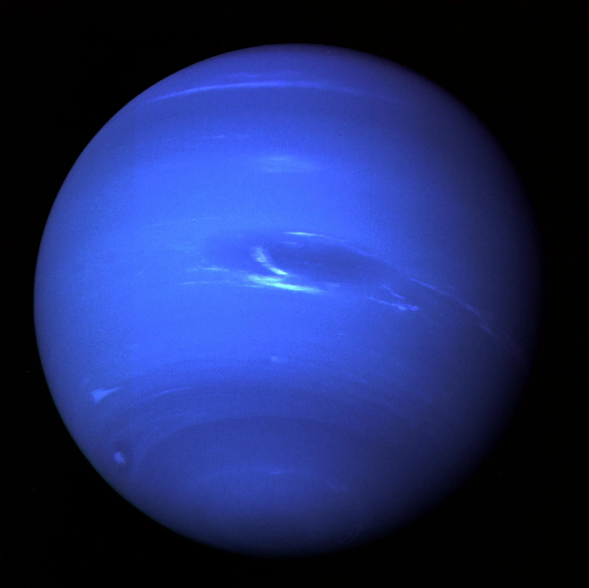

Partez dans des destinations à couper le souffle dans tout l'univers
France
Maroc
Italie
Croatie
Thaïlande
États-Unis
Grèce
Mexique
Japon
Nouvelle-Zélande
Islande
Système solaire
France
Paris - Voyagez vers la capitale
Bienvenue dans la ville lumière, la capitale de la mode, de la culture
et du romantisme - Paris. Chez Alan Industry, nous vous invitons à
plonger dans l'essence même de cette métropole exceptionnelle, où
l'histoire rencontre la modernité et l'élégance se mêle à la passion .
Paris, la ville lumière, vous attend avec ses rues pavées, ses
monuments emblématiques et son ambiance romantique. Des Champs-Élysées
à la Tour Eiffel, chaque coin de Paris respire l'histoire et
l'élégance. Découvrez les musées renommés tels que le Louvre, dégustez
une délicieuse pâtisserie dans une charmante brasserie parisienne.
Chez Alan Industry, nous comprenons l'importance de chaque voyage.
C'est pourquoi nous mettons tout en œuvre pour rendre votre expérience
de réservation aussi agréable que votre séjour à Paris. Notre équipe
dévouée vous garantit des vols confortables, des tarifs compétitifs et
un service personnalisé tout au long de votre voyage.
Lyon - Découvrez la ville des lumières
Bienvenue dans la ville des lumières, Lyon, réputée pour sa
gastronomie, son architecture unique et son ambiance chaleureuse. Chez
Alan Industry, nous vous invitons à explorer les ruelles de cette
ville pleine de charme, où la tradition se mêle à l'innovation.
Lyon, la ville des lumières, vous offre des expériences uniques, des
traboules mystérieuses aux délicieux bouchons lyonnais. Des quais de
la Saône à la colline de Fourvière, découvrez une cité riche en
histoire et en saveurs.
Chez Alan Industry, nous comprenons l'importance de chaque voyage.
C'est pourquoi nous mettons tout en œuvre pour rendre votre expérience
de réservation aussi agréable que votre séjour à Lyon. Notre équipe
dévouée vous garantit des vols confortables, des tarifs compétitifs et
un service personnalisé tout au long de votre voyage.
Marseille - Explorez la cité phocéenne
Bienvenue à Marseille, la perle de la Méditerranée, où l'histoire ancienne se marie harmonieusement avec la vie moderne. Chez Alan Industry, nous vous invitons à plonger dans l'effervescence de cette ville portuaire, baignée de lumière et d'une énergie méditerranéenne incomparable.
Marseille, avec ses marchés animés, ses ruelles pittoresques du Vieux-Port et ses vues spectaculaires depuis la basilique Notre-Dame de la Garde, vous offre une expérience unique. Découvrez une gastronomie méditerranéenne délicieuse, explorez les calanques préservées et laissez-vous séduire par la convivialité chaleureuse des habitants.
Chez Alan Industry, nous comprenons l'importance de chaque voyage. C'est pourquoi nous mettons tout en œuvre pour rendre votre expérience de réservation aussi agréable que votre séjour à Marseille. Notre équipe dévouée vous garantit des vols confortables, des tarifs compétitifs et un service personnalisé tout au long de votre voyage.
Strasbourg - Découvrez la capitale européenne
Bienvenue à Strasbourg, où l'histoire et la culture alsaciennes prennent vie au cœur de l'Europe. Chez Alan Industry, nous vous invitons à vous immerger dans la richesse de cette ville, où les façades à colombages, les canaux pittoresques et l'esprit festif créent une ambiance unique.
Strasbourg, avec sa cathédrale emblématique, ses marchés de Noël enchantés et ses institutions européennes, offre une expérience culturelle incomparable. Explorez les quartiers authentiques, dégustez les spécialités alsaciennes dans les winstubs traditionnelles et laissez-vous émerveiller par la beauté de cette ville dynamique.
Chez Alan Industry, nous célébrons avec enthousiasme la riche diversité des destinations qui composent notre carte aérienne. Nous mettons à votre disposition une expérience de voyage inégalée, alliant le confort supérieur de nos vols, des tarifs compétitifs qui s'adaptent à toutes les bourses, et un service personnalisé pour un séjour mémorable.
Morocco
Agadir - Découvrez la perle du sud
Bienvenue à Agadir, la perle du sud du Maroc, où le soleil, les plages de sable fin et la culture berbère créent une harmonie envoûtante. Chez Alan Industry, plongez dans la douceur de vivre de cette station balnéaire exceptionnelle, alliant détente et découverte.
Agadir, avec son littoral spectaculaire, ses marchés animés et ses jardins luxuriants, vous invite à une expérience balnéaire authentique. Explorez la médina, savourez la cuisine marocaine dans les souks, et laissez-vous emporter par la chaleur de l'hospitalité marocaine.
Chez Alan Industry, nous comprenons l'importance de chaque voyage. C'est pourquoi nous mettons tout en œuvre pour rendre votre expérience de réservation aussi agréable que votre séjour à Agadir. Notre équipe dévouée vous garantit des vols confortables, des tarifs compétitifs et un service personnalisé tout au long de votre voyage.
Morocco
Agadir - Découvrez la perle du sud
Bienvenue à Agadir, la perle du sud du Maroc, où le soleil, les plages de sable fin et la culture berbère créent une harmonie envoûtante. Chez Alan Industry, plongez dans la douceur de vivre de cette station balnéaire exceptionnelle, alliant détente et découverte.
Agadir, avec son littoral spectaculaire, ses marchés animés et ses jardins luxuriants, vous invite à une expérience balnéaire authentique. Explorez la médina, savourez la cuisine marocaine dans les souks, et laissez-vous emporter par la chaleur de l'hospitalité marocaine.
Chez Alan Industry, nous comprenons l'importance de chaque voyage. C'est pourquoi nous mettons tout en œuvre pour rendre votre expérience de réservation aussi agréable que votre séjour à Agadir. Notre équipe dévouée vous garantit des vols confortables, des tarifs compétitifs et un service personnalisé tout au long de votre voyage.
Rabat - Explorez la capitale du Maroc
Bienvenue à Rabat, la capitale du Maroc, où l'histoire, la modernité et la culture se rencontrent avec élégance. Chez Alan Industry, découvrez l'effervescence de cette ville aux rues animées, aux jardins luxuriants et aux monuments emblématiques.
Rabat, avec sa médina préservée, ses palais royaux et sa proximité avec l'océan Atlantique, offre une expérience marocaine authentique. Explorez la kasbah des Oudaias, déambulez dans les souks colorés et savourez la cuisine locale riche en saveurs.
Chez Alan Industry, nous célébrons la diversité des destinations. Profitez de vols confortables, de tarifs compétitifs et d'un service personnalisé pour rendre votre séjour à Rabat mémorable.
Marrakech - Plongez dans la cité rouge
Bienvenue à Marrakech, la cité rouge du Maroc, où les traditions millénaires se mêlent à l'effervescence urbaine. Chez Alan Industry, plongez dans l'atmosphère enchanteresse de cette ville impériale, entre souks animés, palais somptueux et jardins luxuriants.
Marrakech, avec sa médina classée à l'UNESCO, sa place Jemaa el-Fna vibrante et ses riads traditionnels, offre une expérience sensorielle unique. Découvrez l'art de la négociation dans les souks, dégustez la cuisine locale épicée et ressentez la magie de la place animée.
Chez Alan Industry, nous met tout en œuvre pour rendre votre expérience de réservation aussi agréable que votre séjour à Marrakech. Notre équipe dévouée vous garantit des vols confortables, des tarifs compétitifs et un service personnalisé tout au long de votre voyage.
Tanger - Explorez la porte du Maroc
Bienvenue à Tanger, la porte du Maroc, où l'histoire, la mer Méditerranée et la culture se rencontrent dans une harmonie envoûtante. Chez Alan Industry, découvrez la beauté de cette ville côtière, entre médina animée, plages dorées et falaises majestueuses.
Tanger, avec son mélange unique d'influences arabes, africaines et européennes, offre une expérience marocaine distinctive. Explorez la kasbah, déambulez dans les souks, et admirez la vue panoramique depuis le cap Spartel. Laissez-vous séduire par l'atmosphère cosmopolite de cette ville emblématique.
Chez Alan Industry, nous célébrons avec enthousiasme la riche diversité des destinations qui composent notre carte aérienne. Nous mettons à votre disposition une expérience de voyage inégalée, alliant le confort supérieur de nos vols, des tarifs compétitifs qui s'adaptent à toutes les bourses, et un service personnalisé pour un séjour mémorable.
Italie
Rome - Découvrez la Ville Éternelle
Bienvenue à Rome, la Ville Éternelle, où l'histoire ancienne, l'art et la culture vous transportent à travers les siècles. Chez Alan Industry, plongez dans l'atmosphère unique de la capitale italienne, entre le Colisée imposant, le Forum romain et les ruelles pittoresques.
Rome, avec ses célèbres fontaines, ses églises majestueuses et ses places animées, offre une expérience italienne incomparable. Explorez le Vatican, dégustez une délicieuse cuisine italienne et laissez-vous inspirer par l'art et l'architecture exceptionnels de la ville.
Chez Alan Industry, nous célébrons avec enthousiasme la riche diversité des destinations qui composent notre carte aérienne. Nous mettons à votre disposition une expérience de voyage inégalée, alliant le confort supérieur de nos vols, des tarifs compétitifs qui s'adaptent à toutes les bourses, et un service personnalisé pour un séjour mémorable.
Venise - Explorez la Cité des Canaux
Bienvenue à Venise, la Cité des Canaux, où la romance flotte dans l'air à chaque coin de rue. Chez Alan Industry, découvrez l'élégance intemporelle de cette ville lacustre, entre les canaux sinueux, les palais vénitiens et les places emblématiques.
Venise, avec ses gondoles pittoresques, ses masques vénitiens et son histoire fascinante, offre une expérience unique en son genre. Traversez le Pont du Rialto, visitez la Place Saint-Marc et dégustez des spécialités italiennes dans les trattorias traditionnelles.
Chez Alan Industry, nous mettons tout en œuvre pour rendre votre expérience de réservation aussi agréable que votre séjour à Venise. Notre équipe dévouée vous garantit des vols confortables, des tarifs compétitifs et un service personnalisé tout au long de votre voyage.
Pompéi - Voyagez dans le Temps
Bienvenue à Pompéi, où les vestiges de l'Antiquité romaine prennent vie. Chez Alan Industry, explorez cette ville figée dans le temps, entre les ruines fascinantes, les fresques préservées et l'histoire captivante du mont Vésuve.
Pompéi, avec son amphithéâtre bien conservé, ses thermes anciens et ses rues pavées, offre une plongée unique dans le passé. Marchez sur les traces des anciens Romains, découvrez les mystères de la cité ensevelie et revivez l'éclat de cette ville antique.
Chez Alan Industry, nous comprenons l'importance de chaque voyage. C'est pourquoi nous mettons tout en œuvre pour rendre votre expérience de réservation aussi agréable que votre séjour à Pompéi. Notre équipe dévouée vous garantit des vols confortables, des tarifs compétitifs et un service personnalisé tout au long de votre voyage.
Florence - Plongez dans la Renaissance
Bienvenue à Florence, le berceau de la Renaissance, où l'art, la culture et l'architecture célèbrent l'esprit créatif. Chez Alan Industry, plongez dans l'atmosphère artistique de cette ville toscane, entre les chefs-d'œuvre de la Galerie des Offices, le Ponte Vecchio et la majestueuse cathédrale.
Florence, avec ses musées renommés, ses places élégantes et ses jardins pittoresques, offre une immersion totale dans l'ère de la Renaissance. Admirez les sculptures de Michel-Ange, déambulez dans les ruelles historiques et dégustez une cuisine toscane délicieuse.
Chez Alan Industry, nous mettons tout en œuvre pour rendre votre expérience de réservation aussi agréable que votre séjour à Florence. Notre équipe dévouée vous garantit des vols confortables, des tarifs compétitifs et un service personnalisé tout au long de votre voyage.
Croatie
Dubrovnik - Explorez la Perle de l'Adriatique
Bienvenue à Dubrovnik, la Perle de l'Adriatique, où les remparts médiévaux rencontrent les eaux azur de la mer Adriatique. Chez Alan Industry, nous vous invitons à vous promener dans les rues bien préservées de ce site classé au patrimoine mondial de l'UNESCO, où l'histoire et la beauté s'entremêlent.
Dubrovnik, avec ses superbes remparts de la ville et son centre historique, offre un mélange captivant de culture et de beauté naturelle. Explorez le charmant Stradun, profitez de vues panoramiques depuis les remparts de la ville et plongez-vous dans la riche histoire maritime de cette perle côtière.
Chez Alan Industry, nous comprenons l'importance de chaque voyage. Nous nous efforçons de rendre votre expérience de réservation aussi agréable que votre séjour à Dubrovnik. Notre équipe dévouée assure des vols confortables, des tarifs compétitifs et un service personnalisé tout au long de votre voyage.
Split - Découvrez la Beauté Côtière
Bienvenue à Split, un paradis côtier où l'histoire ancienne rencontre la vie méditerranéenne vibrante. Alan Industry vous invite à explorer le palais de Dioclétien, à vous promener le long de la promenade Riva et à vous délecter du mélange unique de tradition et de modernité.
Split, avec sa vieille ville charmante et ses vues imprenables sur la mer, offre une escapade parfaite pour ceux qui recherchent la richesse culturelle et les merveilles naturelles. Découvrez les marchés locaux, savourez la cuisine dalmate et ressentez la chaleur de l'hospitalité de Split.
Chez Alan Industry, nous nous engageons à fournir une gamme diversifiée d'expériences de voyage. Votre voyage à Split est soigneusement conçu, assurant des vols confortables, des tarifs compétitifs et un service personnalisé pour un séjour mémorable.
Zagreb - Explorez le Charme de la Capitale
Bienvenue à Zagreb, la capitale dynamique de la Croatie, où l'architecture historique rencontre une scène culturelle animée. Alan Industry vous invite à vous promener dans les rues médiévales, à visiter des monuments historiques et à ressentir l'esprit dynamique de la ville.
Zagreb, avec ses places charmantes et ses événements culturels, offre un mélange délicieux de tradition et de modernité. Explorez la Vieille Ville, visitez des musées et des galeries, et profitez des cafés confortables qui contribuent à l'atmosphère unique de Zagreb.
Chez Alan Industry, nous célébrons la riche diversité des destinations. Profitez de vols confortables, de tarifs compétitifs et d'un service personnalisé pour rendre votre séjour à Zagreb aussi mémorable que possible. Réservez avec nous pour une expérience inoubliable.
Thaïlande
Bangkok - Découvrez la Capitale Trépidante
Bienvenue à Bangkok, la capitale trépidante de la Thaïlande, où l'ancien et le moderne s'entremêlent dans une symphonie vibrante. Chez Alan Industry, nous vous invitons à explorer les temples scintillants, à déguster la cuisine de rue épicée et à plonger dans la culture effervescente de la ville.
Bangkok, avec ses gratte-ciel étincelants et ses marchés animés, offre une expérience captivante. Des temples majestueux comme le Wat Arun aux quartiers modernes de Sukhumvit, chaque coin de la ville raconte une histoire unique. Découvrez la vie nocturne animée et les canaux tranquilles de la Venise de l'Est.
Chez Alan Industry, nous comprenons l'importance de chaque voyage. Nous vous garantissons des vols confortables, des tarifs compétitifs et un service personnalisé pour rendre votre séjour à Bangkok aussi enrichissant que la diversité de la ville elle-même.
Chiang Mai - Explorez la Perle du Nord
Bienvenue à Chiang Mai, la perle du Nord de la Thaïlande, où la tradition rencontre la nature dans une harmonie parfaite. Alan Industry vous invite à découvrir les temples anciens, à explorer la campagne luxuriante.
Chiang Mai, entourée de montagnes majestueuses, offre une évasion paisible. Des marchés nocturnes colorés aux temples bouddhistes emblématiques tels que le Wat Phra Singh, chaque moment à Chiang Mai est imprégné de charme. Découvrez l'artisanat local.
Chez Alan Industry, nous nous engageons à rendre votre expérience de réservation aussi agréable que votre séjour à Chiang Mai. Profitez de vols confortables, de tarifs compétitifs.
Ayutthaya - Plongez dans l'Histoire Ancienne
Bienvenue à Ayutthaya, une fenêtre sur l'histoire ancienne de la Thaïlande, où les ruines majestueuses témoignent de la grandeur passée. Chez Alan Industry, nous vous invitons à plonger dans cette ancienne capitale, inscrite au patrimoine mondial de l'UNESCO.
Ayutthaya, avec son mélange unique de culture thaïlandaise, khmère et birmane, offre une expérience immersive. Explorez les temples fascinants tels que Wat Mahathat et Wat Phra Si Sanphet, promenez-vous à vélo à travers les vestiges historiques et ressentez la magie de cette cité antique.
Chez Alan Industry, nous mettons tout en œuvre pour rendre votre voyage à Ayutthaya aussi captivant que possible. Profitez de vols confortables, de tarifs compétitifs et d'un service personnalisé pour une exploration sans souci de cette perle historique.
Phuket - Détente et Aventure sur l'Île Paradisiaque
Bienvenue à Phuket, l'île paradisiaque du sud de la Thaïlande, où les plages de sable blanc, les eaux cristallines et la vie nocturne animée créent une destination idyllique. Chez Alan Industry, nous vous invitons à vous détendre sur les plages pittoresques, à explorer les îles voisines et à découvrir l'énergie vibrante de Patong.
Phuket, avec ses stations balnéaires de classe mondiale et ses activités nautiques passionnantes, offre une escapade parfaite. Découvrez la culture locale au Vieux-Phuket, plongez dans la vie marine colorée lors d'une excursion de plongée et savourez une cuisine thaïlandaise délicieuse sur la plage.
Chez Alan Industry, nous nous engageons à rendre votre expérience de réservation aussi agréable que votre séjour à Phuket. Profitez de vols confortables, de tarifs compétitifs et d'un service personnalisé pour une escapade tropicale inoubliable.
États-Unis
New York - La Ville Qui Ne Dort Jamais
Bienvenue à New York, la ville emblématique qui définit l'énergie urbaine et la diversité culturelle. Chez Alan Industry, nous vous invitons à explorer les gratte-ciel majestueux, à flâner dans Central Park et à ressentir le pouls incessant de Times Square.
New York, avec ses quartiers uniques, ses théâtres de Broadway et sa cuisine mondiale, offre une expérience inoubliable. Découvrez la Statue de la Liberté, parcourez les galeries d'art de Chelsea et vivez la magie de cette métropole dynamique.
Chez Alan Industry, nous nous engageons à rendre votre voyage à New York aussi passionnant que la ville elle-même. Profitez de vols confortables, de tarifs compétitifs et d'un service personnalisé pour une immersion totale dans la Grosse Pomme.
Las Vegas - L'Éclat des Lumières et des Casinos
Bienvenue à Las Vegas, la capitale mondiale du divertissement, où les lumières éblouissantes, les spectacles grandioses et les casinos emblématiques créent une atmosphère unique. Chez Alan Industry, plongez dans le glamour de la Strip, tentez votre chance dans les célèbres casinos et assistez à des spectacles sensationnels.
Las Vegas, avec ses hôtels extravagants, ses piscines somptueuses et ses restaurants de renommée mondiale, offre une expérience excitante. Explorez le désert environnant, découvrez les spectacles de renommée mondiale et vivez une aventure sans pareille au cœur de l'Amérique du divertissement.
Chez Alan Industry, nous sommes déterminés à rendre votre séjour à Las Vegas aussi brillant que les néons du Strip. Profitez de vols confortables, de tarifs compétitifs et d'un service personnalisé pour une expérience inoubliable dans la capitale mondiale du jeu.
Los Angeles - La Cité des Anges et du Divertissement
Bienvenue à Los Angeles, la Cité des Anges, où le glamour hollywoodien, les plages ensoleillées et la culture artistique se rencontrent. Chez Alan Industry, découvrez la magie de Hollywood, détendez-vous sur les plages emblématiques et explorez les quartiers dynamiques de la ville.
Los Angeles, avec ses studios de cinéma légendaires, ses parcs d'attractions renommés et sa scène artistique florissante, offre une expérience diversifiée. Visitez le Walk of Fame, parcourez les musées de renom, et plongez-vous dans la créativité qui définit cette métropole captivante.
Chez Alan Industry, nous nous engageons à rendre votre séjour à Los Angeles aussi captivant que le paysage varié de la ville. Profitez de vols confortables, de tarifs compétitifs et d'un service personnalisé pour une exploration sans souci de la Cité des Anges.
Washington - Capitale Politique et Culturelle
Bienvenue à Washington, D.C., la capitale des États-Unis, où l'histoire politique, les monuments emblématiques et les musées exceptionnels créent une toile de fond impressionnante. Chez Alan Industry, explorez le National Mall, visitez les musées Smithsonian et découvrez le cœur du pays.
Washington, avec ses bâtiments gouvernementaux majestueux, ses quartiers historiques et ses quartiers historiques et ses événements culturels, offre une expérience enrichissante. Admirez la Maison Blanche, parcourez les mémoriaux dédiés aux grands leaders et plongez-vous dans la scène artistique florissante de la ville.
Chez Alan Industry, nous nous engageons à rendre votre visite à Washington aussi éducative que passionnante. Profitez de vols confortables, de tarifs compétitifs et d'un service personnalisé pour une exploration immersive de la capitale politique et culturelle des États-Unis.
Grèce
Athènes - Découvrez la cité antique
Bienvenue à Athènes, berceau de la civilisation occidentale, où l'histoire antique rencontre la vie moderne. Chez Alan Industry, plongez dans la richesse culturelle de cette cité pleine de temples majestueux et d'histoires mythologiques.
Athènes, avec son Acropole emblématique et son Agora antique, vous transporte à une époque où la philosophie, l'art et la démocratie ont prospéré. Explorez les rues animées de Plaka, goûtez aux saveurs méditerranéennes et laissez-vous imprégner de la magie de cette ville fascinante.
Chez Alan Industry, nous vous offrons une expérience unique à Athènes. Profitez de vols confortables, de tarifs compétitifs et d'un service personnalisé pour rendre votre voyage aussi mémorable que les vestiges de l'Antiquité.
Corinthe - Explorez l'histoire et la mer
Bienvenue à Corinthe, cité historique entre terre et mer, où les vestiges antiques racontent des récits fascinants. Chez Alan Industry, découvrez cette destination chargée d'histoire, offrant une vue magnifique sur le golfe de Corinthe.
Corinthe, avec son canal impressionnant, ses ruines antiques et ses plages idylliques, vous transporte dans un voyage à travers le temps. Explorez les sites archéologiques, dégustez une cuisine locale authentique et laissez-vous envoûter par l'atmosphère unique de cette cité grecque.
Chez Alan Industry, nous vous promettons une expérience immersive à Corinthe. Bénéficiez de vols confortables, de tarifs compétitifs et d'un service exceptionnel pour rendre votre séjour aussi captivant que les légendes qui entourent cette région.
Cyclades - Explorez les îles grecques envoûtantes
Bienvenue dans les Cyclades, archipel grec aux îles enchanteresses, où le bleu de la mer Égée se marie à l'éclat du ciel. Chez Alan Industry, plongez dans la beauté pittoresque de ces îles emblématiques.
Les Cyclades, avec leurs villages blancs, leurs plages cristallines et leurs couchers de soleil spectaculaires, offrent une escapade idyllique. Explorez les ruelles étroites, goûtez aux saveurs méditerranéennes et ressentez la quiétude de ces îles uniques.
Chez Alan Industry, nous vous promettons une expérience inoubliable dans les Cyclades. Profitez de vols confortables, de tarifs compétitifs et d'un service attentionné pour un séjour sous le signe de la détente et de la découverte.
Santorin - Vivez une expérience unique dans les îles grecques
Bienvenue à Santorin, joyau des Cyclades, où les maisons blanchies à la chaux se perchent sur des falaises volcaniques avec une vue à couper le souffle. Chez Alan Industry, plongez dans l'élégance et l'authenticité de cette île envoûtante.
Santorin, avec ses panoramas à couper le souffle, ses eaux cristallines et ses couchers de soleil inoubliables, offre une expérience romantique. Explorez les villages pittoresques, dégustez une cuisine locale raffinée et laissez-vous emporter par la magie de Santorin.
Chez Alan Industry, nous vous offrons une expérience exceptionnelle à Santorin. Profitez de vols confortables, de tarifs compétitifs et d'un service personnalisé pour rendre votre séjour aussi captivant que les panoramas spectaculaires de cette île grecque.
Mexique
Cancún - Découvrez la perle des Caraïbes
Bienvenue à Cancún, la perle des Caraïbes, où les plages de sable blanc rencontrent les eaux cristallines. Chez Alan Industry, nous vous invitons à plonger dans la beauté tropicale de cette destination paradisiaque, où détente et aventures vous attendent.
Cancún, avec ses complexes hôteliers luxueux, ses sites archéologiques mayas et sa vie nocturne animée, vous offre une expérience inoubliable. Explorez les récifs coralliens, détendez-vous sur les plages idylliques et laissez-vous emporter par l'atmosphère enchanteresse de cette ville balnéaire.
Chez Alan Industry, nous sommes ravis de vous accompagner dans cette aventure à Cancún. Profitez de vols confortables, de tarifs compétitifs et d'un service personnalisé pour rendre votre séjour aussi exceptionnel que les couchers de soleil sur la mer des Caraïbes.
Mexico - Explorez la capitale vibrante
Bienvenue à Mexico, une capitale vibrante où l'histoire, la culture et la modernité se rencontrent. Chez Alan Industry, nous vous invitons à explorer les trésors de cette métropole fascinante, des pyramides anciennes aux quartiers animés.
Mexico, avec ses musées exceptionnels, ses marchés colorés et sa scène artistique dynamique, vous offre une plongée dans la riche diversité mexicaine. Découvrez la cuisine savoureuse, admirez l'architecture coloniale et plongez dans l'effervescence de cette ville cosmopolite.
Chez Alan Industry, nous sommes fiers de vous offrir une expérience unique à Mexico. Profitez de vols confortables, de tarifs compétitifs et d'un service personnalisé pour rendre votre séjour aussi captivant que les ruelles de la Zona Rosa.
Campeche - Plongez dans le charme colonial
Bienvenue à Campeche, une ville au charme colonial préservé, où les façades colorées et les remparts racontent une histoire fascinante. Chez Alan Industry, nous vous invitons à plonger dans l'atmosphère authentique de cette perle méconnue.
Campeche, avec ses rues pavées, ses forts historiques et ses festivals animés, vous transporte dans le passé du Mexique. Explorez les marchés locaux, savourez la cuisine traditionnelle et laissez-vous séduire par l'accueil chaleureux des habitants.
Chez Alan Industry, nous sommes ravis de vous faire découvrir la beauté de Campeche. Profitez de vols confortables, de tarifs compétitifs et d'un service personnalisé pour rendre votre séjour aussi authentique que les murs de la vieille ville.
Valladolid - Explorez le cœur de la péninsule
Bienvenue à Valladolid, un trésor au cœur de la péninsule du Yucatán, où l'histoire maya et la culture coloniale se rencontrent. Chez Alan Industry, nous vous invitons à explorer cette ville charmante, entre cenotes et églises centenaires.
Valladolid, avec ses places pittoresques, ses marchés animés et ses cénotes cristallines, vous offre une expérience authentique dans la péninsule du Yucatán. Découvrez la richesse culturelle, dégustez les spécialités locales et plongez dans l'at
Chez Alan Industry, nous sommes enchantés de vous guider à Valladolid. Profitez de vols confortables, de tarifs compétitifs et d'un service personnalisé pour rendre votre séjour aussi captivant que la découverte des sites archéologiques mayas voisins.
Japon
Tokyo - Découvrez la capitale vibrante
Bienvenue à Tokyo, la métropole effervescente où la tradition rencontre la modernité. Chez Alan Industry, plongez dans l'atmosphère électrique de cette ville cosmopolite, où les gratte-ciel scintillants coexistent avec des temples anciens.
Tokyo, avec ses quartiers dynamiques comme Shibuya et ses jardins tranquilles comme Shinjuku Gyoen, offre une expérience unique. Des délices culinaires aux innovations technologiques, découvrez une ville où chaque coin raconte une histoire fascinante.
Chez Alan Industry, nous vous invitons à explorer Tokyo avec le confort de nos vols, des tarifs compétitifs et un service dévoué. Profitez pleinement de votre séjour dans cette métropole qui allie l'ancien et le nouveau de manière harmonieuse.
Kyoto - Explorez la beauté traditionnelle
Bienvenue à Kyoto, la ville des geishas et des temples majestueux. Chez Alan Industry, plongez dans l'élégance intemporelle de cette ancienne capitale, où chaque rue raconte une histoire vieille de plusieurs siècles.
Kyoto, avec ses jardins de mousse, ses temples dorés et ses ruelles préservées, offre une expérience unique au cœur de la culture japonaise. Découvrez l'art du thé, les festivals traditionnels et la sérénité qui règne dans cette ville empreinte d'histoire.
Chez Alan Industry, nous vous invitons à vivre l'authenticité de Kyoto. Profitez de nos vols vers cette destination unique, avec des tarifs compétitifs et un service personnalisé pour rendre votre séjour aussi mémorable que les cerisiers en fleurs au printemps.
Osaka - Vivez l'effervescence urbaine
Bienvenue à Osaka, la ville dynamique où la gastronomie exceptionnelle et le divertissement abondent. Chez Alan Industry, plongez dans l'effervescence de cette métropole japonaise, où la modernité s'associe à une atmosphère conviviale.
Osaka, avec son château imposant, ses quartiers commerçants animés et ses délices culinaires comme le takoyaki, offre une expérience unique. Découvrez le contraste entre les gratte-ciel illuminés et les sanctuaires traditionnels dans cette ville pleine de surprises.
Chez Alan Industry, nous vous proposons des vols vers Osaka pour que vous puissiez découvrir cette ville animée. Profitez de tarifs compétitifs, d'un service de qualité et plongez dans l'énergie vibrante d'Osaka lors de votre séjour inoubliable.
Karuizawa - Échappez à la sérénité des montagnes
Bienvenue à Karuizawa, une retraite paisible nichée dans les montagnes verdoyantes. Chez Alan Industry, échappez à l'agitation urbaine et découvrez cette destination japonaise où la nature rencontre l'élégance décontractée.
Karuizawa, avec ses onsens relaxants, ses sentiers de randonnée pittoresques et ses boutiques élégantes, offre une expérience unique loin du tumulte des grandes villes. Profitez d'une escapade relaxante dans cette destination prisée des Japonais.
Chez Alan Industry, nous vous invitons à découvrir Karuizawa. Profitez de nos vols pour cette destination apaisante, avec des tarifs compét Chez Alan Industry, nous vous invitons à découvrir Karuizawa. Profitez de nos vols pour cette destination apaisante, avec des tarifs compétitifs et un service attentif pour rendre votre séjour aussi relaxant que les sources chaudes de la région.
Nouvelle-Zélande
Mount Maunganui - Découvrez la beauté côtière
Bienvenue à Mount Maunganui, où les plages de sable blanc s'étendent à perte de vue. Chez Alan Industry, nous vous invitons à explorer cette destination côtière paradisiaque, où l'océan Pacifique rencontre une ambiance décontractée.
Mount Maunganui offre des vues panoramiques depuis son sommet, des activités nautiques passionnantes et une atmosphère détendue. Découvrez la beauté naturelle préservée de cette région, entre plage et montagne.
Chez Alan Industry, nous mettons tout en œuvre pour rendre votre expérience de réservation aussi agréable que votre séjour à Mount Maunganui. Profitez de vols confortables, de tarifs compétitifs et d'un service personnalisé tout au long de votre voyage.
Nelson - Explorez la région des vins et de l'art
Bienvenue à Nelson, où les vignobles rencontrent une scène artistique florissante. Chez Alan Industry, nous vous invitons à découvrir cette région riche en culture, en art et en délices vinicoles.
Nelson offre des paysages pittoresques, des galeries d'art captivantes et des vins primés. Explorez les marchés locaux, visitez les ateliers d'artistes et goûtez aux saveurs uniques de cette destination néo-zélandaise.
Chez Alan Industry, nous comprenons l'importance de chaque voyage. C'est pourquoi nous mettons tout en œuvre pour rendre votre expérience de réservation aussi agréable que votre séjour à Nelson. Notre équipe dévouée vous garantit des vols confortables, des tarifs compétitifs et un service personnalisé.
Wanaka - Vivez l'aventure au cœur des montagnes
Bienvenue à Wanaka, où les lacs scintillants entourent des sommets majestueux. Chez Alan Industry, nous vous invitons à vivre une aventure au cœur des montagnes, entre paysages époustouflants et activités palpitantes.
Wanaka offre des possibilités infinies pour les amateurs de plein air, du ski en hiver à la randonnée en été. Détendez-vous au bord du lac, explorez les sentiers de montagne et découvrez la magie de cette destination néo-zélandaise.
Chez Alan Industry, nous célébrons la diversité des destinations. Profitez de vols confortables, de tarifs compétitifs et d'un service personnalisé pour rendre votre séjour à Wanaka mémorable.
Napier - Plongez dans l'histoire et le vin
Bienvenue à Napier, où l'architecture Art déco rencontre les vignobles luxuriants. Chez Alan Industry, nous vous invitons à plonger dans l'histoire fascinante de cette ville et à déguster des vins exceptionnels dans un cadre pittoresque.
Napier offre une atmosphère élégante avec ses bâtiments Art déco bien préservés. Explorez les vignobles environnants, dégustez des vins primés et découvrez la richesse culturelle de cette charmante destination néo-zélandaise.
Chez Alan Industry, nous mettons tout en œuvre pour rendre votre expérience de réservation aussi agréable que votre séjour à Napier. Notre équipe dévouée vous garantit des vols confortables, des tarifs compétitifs et un service personnalisé pour que votre voyage soit mémorable.
Islande
Reykjavik - Découvrez la capitale islandaise
Bienvenue à Reykjavik, la capitale islandaise, où la nature rencontre la culture nordique moderne. Chez Alan Industry, nous vous invitons à explorer cette ville dynamique située entre mer et montagnes, offrant une expérience unique.
Reykjavik, avec son architecture moderne et ses bains géothermiques, est le point de départ idéal pour découvrir les merveilles naturelles de l'Islande. Des aurores boréales aux geysers, en passant par les cascades majestueuses, chaque coin de l'Islande raconte une histoire fascinante.
Chez Alan Industry, nous sommes fiers de vous offrir des vols vers l'Islande qui combinent confort, tarifs compétitifs et un service attentionné. Préparez-vous à vivre une aventure islandaise inoubliable.
Akureyri - Explorez la perle du Nord
Bienvenue à Akureyri, la perle du Nord, où les fjords majestueux rencontrent une atmosphère tranquille. Chez Alan Industry, nous vous invitons à découvrir le charme de cette ville pittoresque, porte d'entrée vers les paysages époustouflants de l'Islande septentrionale.
Akureyri, avec ses jardins botaniques, ses églises historiques et ses festivals animés, offre une expérience relaxante au cœur de la nature islandaise. Explorez les environs, des montagnes aux sources chaudes, et laissez-vous imprégner par l'atmosphère unique de l'Islande.
Chez Alan Industry, nous vous promettons un voyage vers Akureyri qui allie commodité, accessibilité et une immersion totale dans la beauté naturelle islandaise. Réservez votre vol dès maintenant et préparez-vous à vivre des moments magiques dans la perle du Nord.
Ville 3 - Nom de la ville
Description de la ville 3 - Bienvenue à Ville 3, où...
Ville 3, avec ses caractéristiques uniques et ses attractions remarquables, offre une expérience inoubliable. Explorez les environs, des lieux emblématiques aux trésors cachés, et plongez-vous dans l'histoire captivante de cette ville.
Chez Alan Industry, nous nous engageons à rendre votre voyage à Ville 3 aussi exceptionnel que possible. Profitez de nos vols confortables, de tarifs compétitifs et d'un service personnalisé pour une expérience de voyage incomparable.
Ville 4 - Nom de la ville
Description de la ville 4 - Bienvenue à Ville 4, où...
Ville 4, avec ses caractéristiques uniques et ses attractions remarquables, offre une expérience inoubliable. Explorez les environs, des lieux emblématiques aux trésors cachés, et plongez-vous dans l'histoire captivante de cette ville.
Chez Alan Industry, nous nous engageons à rendre votre voyage à Ville 4 aussi exceptionnel que possible. Profitez de nos vols confortables, de tarifs compétitifs et d'un service personnalisé pour une expérience de voyage incomparable.
Système Solaire
Jupiter - La géante gazeuse
Bienvenue sur Jupiter, la plus grande planète de notre système solaire, une géante gazeuse aux tourbillons mystérieux et aux tempêtes tumultueuses. Chez Alan Industry, nous vous invitons à explorer les secrets de cette planète majestueuse.
Jupiter, avec son atmosphère dense et ses anneaux sublimes, offre un spectacle céleste incomparable. Découvrez les lunes fascinantes qui orbient autour de cette géante gazeuse et laissez-vous émerveiller par la grandeur de Jupiter.
Chez Alan Industry, nous vous promettons un voyage interplanétaire exceptionnel. Profitez de nos vols spatiaux confortables, des tarifs compétitifs et d'un service personnalisé pour une exploration planétaire inoubliable.
Neptune - La mystérieuse géante glacée

Bienvenue sur Neptune, la mystérieuse géante glacée du système solaire, où des vents violents soufflent à travers son atmosphère bleue. Chez Alan Industry, plongez-vous dans l'exploration de cette planète lointaine et fascinante.
Neptune, avec ses anneaux délicats et ses lunes énigmatiques, offre un spectacle céleste captivant. Découvrez les secrets de cette planète glacée, où l'obscurité de l'espace contraste avec la beauté hypnotique de Neptune.
Chez Alan Industry, nous vous offrons une expérience spatiale unique. Embarquez pour un voyage vers Neptune avec nos vols spatiaux de pointe, des tarifs compétitifs et un service personnalisé pour une aventure interstellaire inoubliable.
Mars - La planète rouge
Bienvenue sur Mars, la fascinante planète rouge, symbole de l'exploration planétaire humaine. Chez Alan Industry, plongez-vous dans les mystères de cette planète, connue pour ses déserts martiens et ses montagnes majestueuses.
Mars, avec ses canyons profonds et ses calottes polaires, offre un terrain d'exploration unique. Découvrez les rovers qui parcourent la surface de Mars et imaginez-vous marchant sur cette planète rouge au cours de notre aventure spatiale.
Chez Alan Industry, nous vous invitons à vivre l'exploration de Mars avec nos vols spatiaux exceptionnels, des tarifs compétitifs et un service personnalisé pour une aventure cosmique inoubliable.
Saturne - L'élégante aux anneaux
Bienvenue sur Saturne, la magnifique géante aux anneaux, une planète célèbre pour sa beauté spectaculaire. Chez Alan Industry, explorez l'élégance de cette planète, où des anneaux majestueux encerclent son atmosphère dorée.
Saturne, avec ses lunes intrigantes et ses tempêtes tourbillonnantes, offre un spectacle céleste unique. Découvrez la complexité de ses anneaux et imaginez-vous flottant au milieu de cette merveille cosmique.
Chez Alan Industry, nous vous offrons une expérience exceptionnelle d'exploration de Saturne. Embarquez pour un voyage interplanétaire avec nos vols spatiaux de pointe, des tarifs compétitifs et un service personnalisé pour une aventure cosmique mémorable.